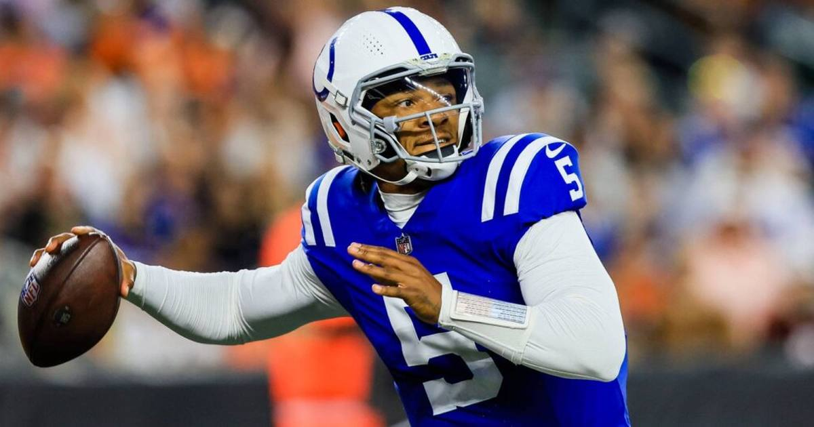

Colts cut Daniel Jones, turn back to Richardson
Indianapolis released Daniel Jones on Friday, less than a day after a 26-3 loss at Houston, and handed the starting job back to Anthony Richardson for the November 29 game against the Giants.

Disclosure: this post contains affiliate links. I earn a commission on qualifying purchases.
The Indianapolis Colts released quarterback Daniel Jones on Friday, a day after Houston beat Indianapolis 26-3. Anthony Richardson will start against the New York Giants on November 29, his first start since the 2024 season.
The move
Head coach Shane Steichen announced the decision Friday, less than 24 hours after the Thursday night loss in Houston. Jones is gone outright — not benched, not demoted. Richardson, the No. 4 overall pick in the 2023 draft, gets the job back.
Jones signed a two-year, $88 million contract with Indianapolis in March. The Colts will save about $11.6 million by cutting him now.
Why now
The timing follows a string of poor showings, capped by the 26-3 loss to the Texans. Jones handled starting duties through the first 11 games of the season; the Colts went 3-8 in those starts, and Jones threw a league-leading 13 interceptions against seven touchdowns.
Richardson replaced Jones in the fourth quarter Thursday. He was 0 for 2 with one carry for 2 yards.
Steichen said the decision to waive Jones was "made for the best interests of both parties." Jones did not request his release.
Richardson gets another shot
This is the second time in three years Jones has been released in November — the first came after he sought and received his release from the Giants in 2024.
Richardson is the last quarterback the Colts believed could be the long-term answer at the position, and his return is a second chance to prove it. He wanted out of Indianapolis last offseason, and the Colts forced him to compete with Riley Leonard for the backup job in training camp. Now the job is his again, at least for the rest of the season. Leonard is the only other quarterback on Indy's active roster.
Jones will remain on the waiver wire until Monday afternoon. Baltimore and Minnesota were interested in trading for him before the deadline, but the Colts held on — and now get nothing for him.
What comes next
Richardson's first start: vs. New York Giants, November 29
Jones' waiver window: Until 4 p.m. Monday
Colts' record: 3-8
Jones' contract: $88 million over two years
Richardson will be a free agent after the 2026 season, so the final six weeks double as an audition — for the Colts, or for anyone else watching.
Watch
Source: Indianapolis Colts' Shane Steichen Makes Shocking Announcement On Daniel Jones, Anthony Richardson — Locked On Colts. Steichen's announcement that the Colts have released Daniel Jones and that Anthony Richardson Sr. will be the new starting quarterback.
Sources
• Colts release QB Daniel Jones, turn to Anthony Richardson — Reuters
• Colts to start Anthony Richardson Sr. at quarterback, release Daniel Jones — Colts.com
• Colts release Daniel Jones, will start Anthony Richardson at quarterback — Indianapolis Star
• Colts release Daniel Jones, turn to Anthony Richardson at QB — NBC Sports Bay Area
• Colts release Daniel Jones as QB's Indy era ends with stunning thud — USA Today
Gear up: Fanatics